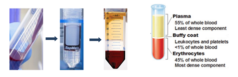
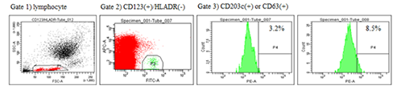
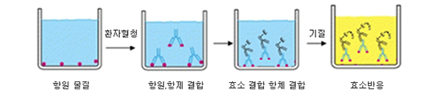

서비스 이용안내
-
시험책임자/의뢰자
-
상담
- 2일
-
서비스 의뢰 신청접수
신청서 -
의뢰내용 산정 시행
- 10일
-
서비스 이용 여부 확인
NO
-
원내 : 업무협약체결
원외 : 계약체결 -
서비스 시행
임상시험센터
| 주요업무 | 담당자 연락처 | 이메일 | |
|---|---|---|---|
| 임상시험행정업무 | 서비스 의뢰 및 협력 안내 | 031-219-4536 | mdctc@aumc.ac.kr |
| 의약품, 의료기기 | 031-219-4536 | mdctc@aumc.ac.kr | |
| 질관리 | 031-219-4467 | log0702@aumc.ac.kr | |
| 임상시험서비스 | 임상시험코디네이터 등 | 031-219-4466 | hopeajou@aumc.ac.kr |
| 임상시험지원서비스 | 다기관 관리 협조 및 방문 모니터링 자료관리 전자자료 수집프로그램개발 통계분석서비스 기타 (DSMB 등) |
031-219-4273 | ajoustat@aumc.ac.kr |
임상중개연구서비스
임상중개연구 샘플링
| 혈액유래세포 분리 및 보관 | 다양한 검체 분리 및 보관 | |
|---|---|---|
| 검체 종류 | 혈액, 당일 오전 채혈 | 혈청(Serum), 혈장(Plasma), 객담(Sputum), 소변 (Urine) |
| 분석 방법 | 
|
|
| 적용 범위 | 림프구 활성능 측정, 형광이용 면역세포 활성능 분석, 오믹스 연구, 바이오마커 발굴 연구 | 약물 유효성 평가, 바이오마커 발굴연구, 오믹스 연구 |
모델 기반 유효성 평가
| 체외 자극 실험 (ex vivo stimulation assay) | |
|---|---|
| 검체 종류 | 혈액, 당일 오전 채혈 |
| 분석 방법 |
|
| 적용 범위 | 치료제 후보물질의 유효성 평가 |
| 세포 주 모델 기반 신약 후보물질 유효성 평가 | |
| 세포 주 종류 | 호산구세포, 단핵구세포, 비만세포, 기도평활근세포, 기도상피세포 등 |
| 분석 방법 |
|
| 적용 범위 | 면역 염증 세포 활성 억제 능 측정. 새로운 치료전략 수립 |
| 기타 분석 서비스 | |
| ELISA 분석 | 상담 후 결정 |
| FACS 분석 | 면역세포 phenotype 분석, 세포 주를 이용한 수용체 발현 측정, 세포 내 발현여부 및 발현 정도 변화 측정 |
면역과민반응평가
| 호염기구 활성능 검사 (Basophil activation test) |
항원 특이 면역글로불린 검사 (Allergen specif fc immunoglobulin) |
|
|---|---|---|
| 검체 종류 | 혈액, 당일 오전 채혈 | 혈청 또는 혈장 |
| 분석 방법 |

|

|
| 적용 범위 | 항원 물질 특이 호염기구 활성 측정, 위험인자 알레르기 반응 정도 예측, 면역치료 효과 판정 |
항원특이 면역글로불린 확인, 알레르기 원인 물질 확인 |
연구 기자재 지원 서비스
| 유세포분석기 (Flow cytometry) | Deep freezer |
|---|---|
|
|
문의사항
서비스 상담
담당교수 유민숙
서비스절차 문의
담당 연구원 양은미
모든 서비스는 담당 교수와 상담 후 진행됩니다. 메일로 연락주시기 바랍니다. 서비스절차 문의는 담당 연구원과 전화상담 후 진행됩니다.